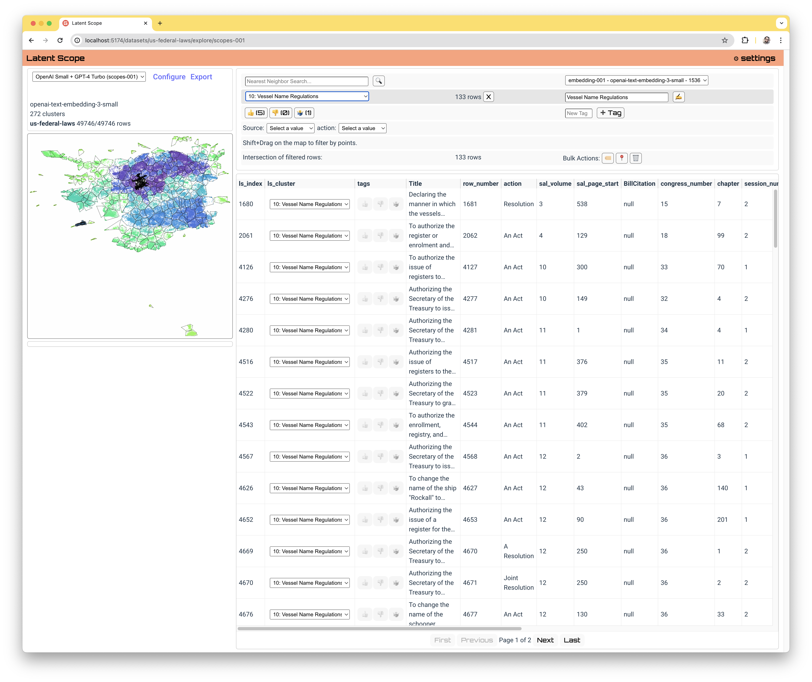
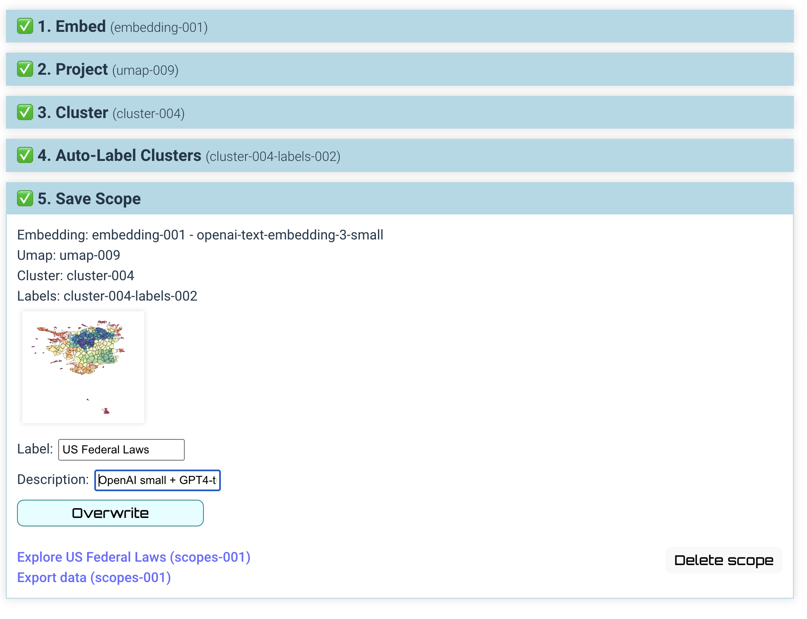

50,000 U.S. Federal Laws
This fascinating dataset contains the titles and dates of almost 50,000 U.S. federal laws from to . I was made aware of this dataset in the Data is Plural 2024.02.28 edition, a great place to find interesting public datasets.
The 49,746 laws:
As you might imagine, 50k laws is a lot to sort through. We can use Latent Scope to organize them by the similarity of their titles and see what clusters of laws emerge. This article takes you through a short tour of these clusters, stopping at some really funny laws as well as some deadly serious laws.
Before we explore, I want to give a short preview of what Latent Scope is, you can get a full tutoria on building your own scope but this is the interface you would work with to curate your clusters in the tool:
Latent scope helps you put your data through a 4 step process:
- Embed - run each piece of text through an embedding model
- Project - run the high-dimensional embeddings through UMAP
- Cluster - run the 2-dimensional UMAP coordinates through HDBSCAN
- Label - ask an LLM to create a label by summarizing a list of text taken from each cluster
So at the end of this process we have clusters carving up our laws, with
every row of our input data annotated with a cluster index and label.
In our other example analyses like Datavis Survey and enjalot's tweets we didn't have quite so many data points.
50,000 isn't enormous, Latent Scope can easily work with a million on an average computer, but it is still a lot of points to plot.
So in this analysis we will focus on exploring the clusters, showing the individual laws in each cluster only when you select a cluster. Feel free to peruse the clusters in this interface, if you keep scrolling I'll take you on a tour of the ones I find most interesting!
Click on the radio button on the left of each cluster in the table, or click on a cluster in the map to select it and see the details in the card below
The cluster that jumped out at me when I was first browsing the data is . Seeing laws with a title like "To change the name of the schooner Sally McGee to that of Ocean Eagle" and "To authorize the Secretary of the Treasury to change the name of the steam yacht "Fanny." made me wonder what was going on in the 1800s. It seems like back then you even had to get Congress to help you fix a typo in your boat name: " To change the name of the schooner La Pette to La Petite."
Another fun cluster is . Were you aware that since 1962 the U.S. has had a "an annual National School Lunch Week"? There are over 600 National awareness related laws in this cluster!
I also found the "Joint resolution to designate the third Sunday in June 1966 as Father's Day", which made me curious about when Mother's day was establshed. I believe this dataset is missing the 1914 law passed by U.S. Congress to make it official.
Here are the laws in the dataset passed in May of 1914:
When dealing with a lot of data, small data quality issues can be hard to find. Being able to explore the data by through the meaningful groupings of the clusters is a great way to ask questions you didn't know you had!
U.S. Land Legislation
An interesting and a bit more serious cluster is . Can you find laws related the Louisiana Purchase around 1803?
Bridge Building
There are more than 3,000 laws related to bridge building and dam construction across 19 clusters. Sometimes the embedding model finds patterns in text that are more subtle than a high level concept such as bridges and dams. Investigating what the different patterns in each cluster are could lead to interesting insights (if you care about bridges and dams!)
Another thing to notice about those bridge building clusters is that a lot of those laws were passed in the early 20th century, with a peak in the late 1920s and early 1930s. This is also around the time that the Golden Gate Bridge began construction, so we must have really been into bridges at that time.
Washington D.C.
What does Congress love almost as much as building bridges? Washington D.C.! With over 5% of the laws in the dataset found in the Washington D.C. cluster, you can tell they really care about it.
Native Americans
There are also quite a few laws relating to our sad history with Native Americans.
Civil Rights
I wasn't able to identify clusters that related specifically to civil rights, but thanks to the embeddings I was able to use nearest neighbor search to find 150 laws that are related to the concept of civil rights.
Nearest neighbor search on embeddings is what powers techniques like Retrieval Augmented Generation (RAG), finding relevant documents to feed to an LLM as context for a query. In the above visualization we can see that the similarity search on the query of "civil rights" returns laws that are mostly relevant but also spread across various clusters. What would it be like to leverage the clustering to determine relevance when implementing techniques like RAG?
Interested in running your own large text dataset through Latent Scope? Try out the getting started tutorial and reach out on Discord if you run into any issues!